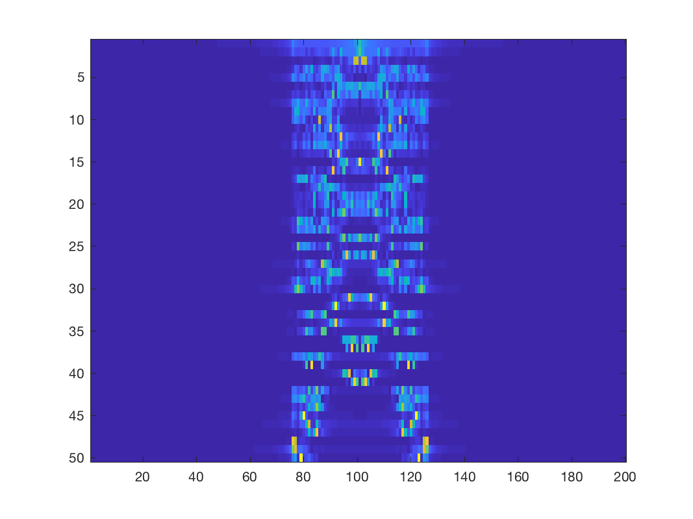

Xhat = gsp_jft(G,X)
| G | Time-Vertex graph structure |
| X | Time-Vertex signal |
| Xhat | Joint Time-Vertex Fourier Transform of X |
To compute the Fourier basis of a graph G, you can use the function:
G = gsp_compute_fourier_basis(G);
Example:
N = 50; T=200; G = gsp_sensor(N); G = gsp_jtv_graph(G,T); G = gsp_compute_fourier_basis(G); X = sin((1:N)'*(1:T)*pi/(4*N)); Xhat = gsp_jft(G,X); imagesc(fftshift(abs(Xhat),2));